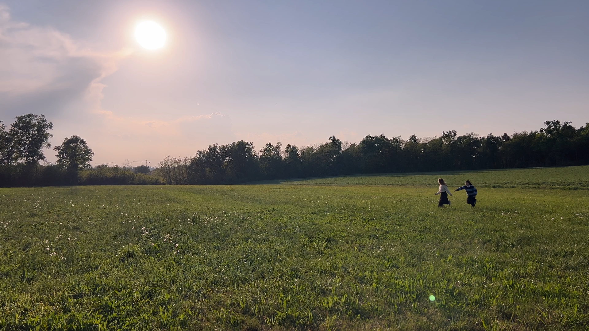
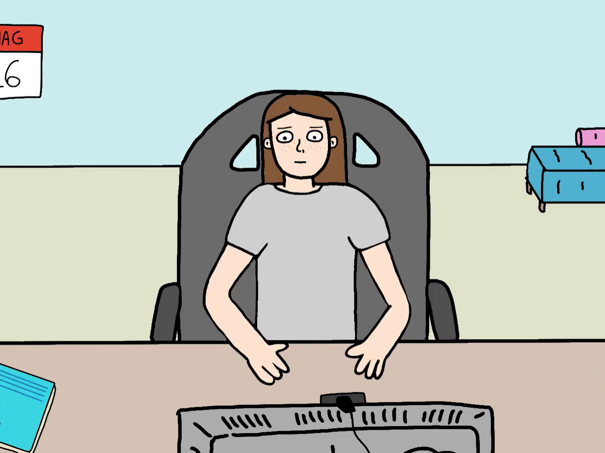
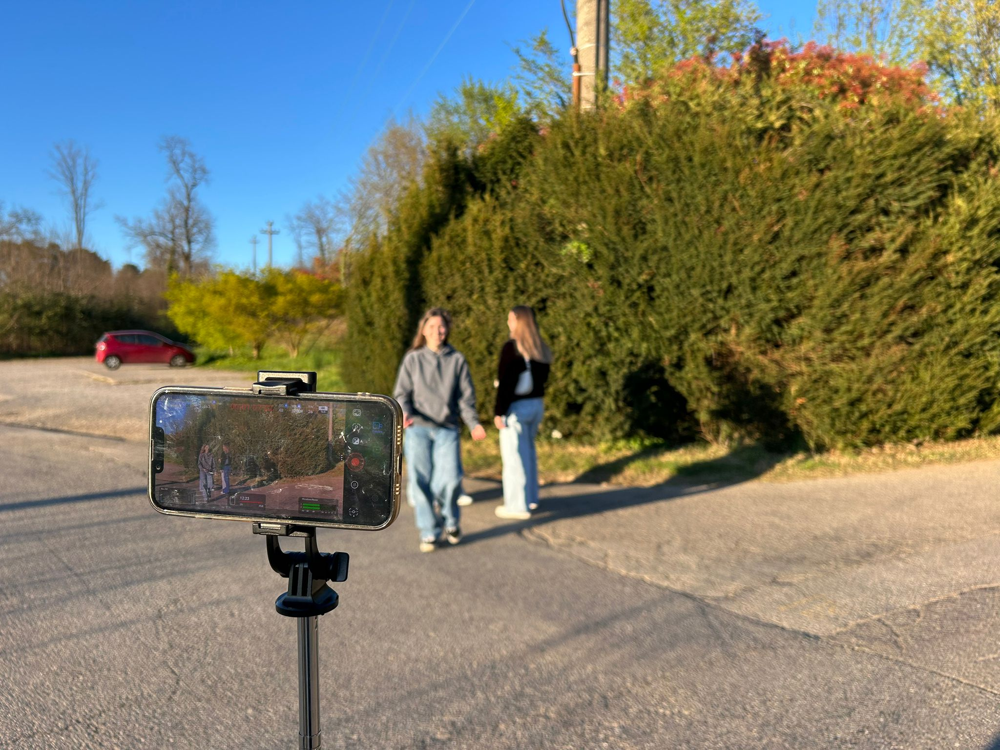

VIDEOS
DIRECTION, CREATION, EDITING
2020 IN 60 SECONDS
TITLE: “2020 in 60 seconds”
YEAR: 2021
CREDITS: Emma Listorto (Animation and editing)

NAUSEOUS
TITLE: “Nauseous - Conan Gray fan music video”
YEAR: 2026 (work in progress)
CREDITS: Emma Listorto (Camera, direction, editing), Giulia Balestrieri (Acting, editing)
